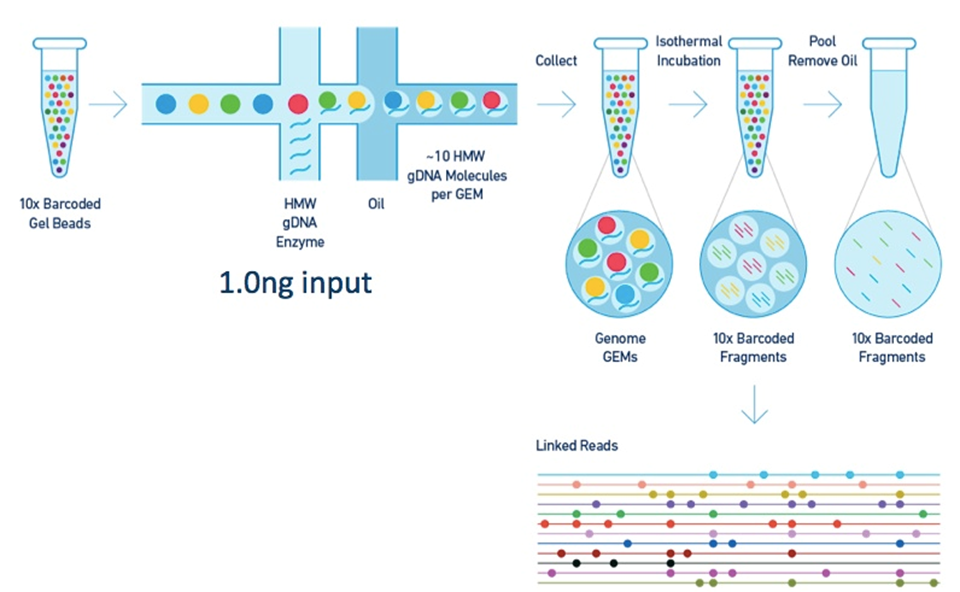
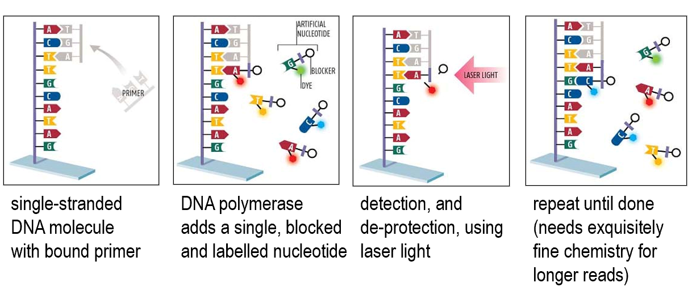
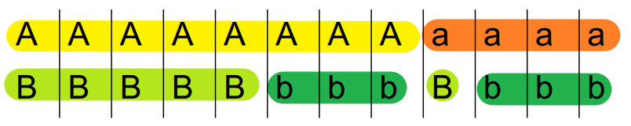
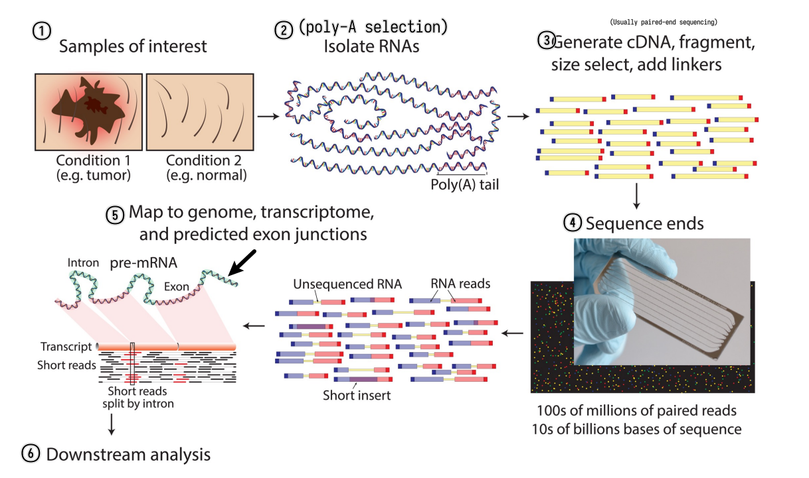
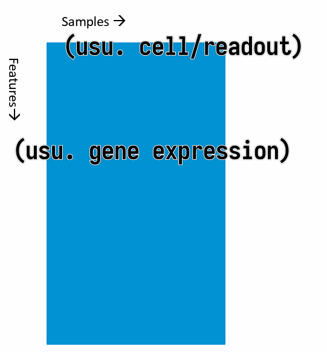

Notes taken @ ETH Zurich
Introduction
Here I list all courses I took at ETH Zurich and provide a brief overview of the course content. The clickable links will lead you to the respective course notes.
Courses are organized by semester and year. The course notes are organized by lecture.
22HS
- Computational Biology
- Data Mining I
- Information Systems for Engineers
- Computational Systems Biology
23FS + HS
- Mobile Health and Activity Monitoring
- Functional Genomics
- Introduction to Machine Learning
- Big Data for Engineers
- Statistical Models in Computational Biology
No courses (except for seminar) taken in 23HS since I was doing an internship at Roche.
24FS
- Biofluiddynamics
- Synthetic Biology I
Mobile Health and Activity Monitoring
Functional Genomics
A course collectively taught by multiple professors. Multiple-choice exam, lots of memorization.
Table of Contents
- 01. Modern Genomics I
- 02. Modern Genomics II
- 03. Transcriptomics I
- 04. Transcriptomics II
- 05. miRNAs and Other Small RNAs
- 06. Proteomics
- 07. Metabolomics
- 08. Single Cell Mass Cytometry
- 09. Protein Networks
- 10. Epigenomics and Gene Regulation
- 11. Quality Control and Standards
Modern Genomics I
- Introduction
- Classical sequencing method
- New (Next-generation) sequencing technologies
- Third-generation sequencing technologies
- Environmental sequencing
- Single-cell sequencing
- Genomic databases
Introduction
Molecular biology is governed by the "central dogma". Genomics is basically studying the DNA part of it.
Genome sequence: complete listing of all nucleotides of one organisms, in correct order, and mapped to the chromosomes.
graph LR
A[DNA] -->|Transcription| B[RNA]
B -->|Translation| C[Protein]
Timeline
Efficient sequencing technology arrived rather late. Initially the sequencing process was cumbersome and radioactive.
- 1975: "dideoxy" DNA sequencing (Sanger)
- 1977: first genome (bacteriophage \( \phi X 174 \) )
- 1995: first cell (Haemophilus influenzae)
- 1998: first animal (Caenorhabditis elegans)
- 2001: Homo sapiens
- Today (February 2023)
- genomes available for: 409,947 Bacteria, 4,988 Archaea, 47,200 Eukaryotes
- human genomes fairly routine
- below 1000$ raw costs
- "Personal Genome Projects" are enrolling 100’000s of volunteers, including their medical records
Why Genomics?
- Because we want an inventory of all genes and functions
- Because wea can compare genomes to learn about evolution, to get hints on gene function, etc
- Comparison can be either based on DNA or protein
- Alignments, dot plots, whole chromosome comparison
Comparative genomics use case examples
- Gene prediction
- Gene prediction algorithms that use homology (=comparative genomics result) information: SLAM, SGP, Twinscan (= N-SCAN)...

- Gene family evolution
Classical sequencing method
Sanger (double-deoxy) sequencing
Natural DNA extension requires 3'-OH. The dideoxy method uses a 2',3'-dideoxy nucleotide, which lacks the 3'-OH group. This causes the DNA chain to terminate. By introducing different dideoxy nucleotides, the sequence can be read.
Automated Dye Sequencing
Variants of Sanger sequencing. Still utilize the dideoxy method to terminate DNA elongation. The difference is that the dideoxy nucleotides are labeled with different fluorescent dyes. The sequence is read by a laser.

Dye terminator sequencing is now widely used over the rather cumbersome (4 tubes per sample) dye primer chemistry.
New (Next-generation) sequencing technologies
Generally involves first amplifying the DNA, then sequencing it. Sequencing is done by detecting the nucleotides as they are incorporated into the growing DNA strand (sequencing by synthesis). High-throughput is achieved by parallelizing the sequencing process.
Amplification technologies
First-generation amplification technology: needs DNA-library in bacterial vectors --> cumbersome and biased
Improvement: get rid of bacteria
Emulsion PCR
Improvement: bacterium free, but still needs cloning
%%{init: {"graph": {"htmlLabels": false}} }%%
graph TD
A["`**Fragment** the DNA, ligate **adapters** to ends, make **single-stranded**`"] --> B["Attach to microbeads"]
B --> C["`PCR-amplify, in a **water-oil emulsion**`"]
C --> D["`Enrich beads having successful amplifications, then place into regular lattice
(see figure below for details)`"]

In short, the enrichment is done by capturing the second (5'-end) primer of the PCR product onto a large polysyrene bead.
PCR on solid support

Barcoding and "linked reads"


Sequencing technologies
First-generation sequencing needs DNA size-separation on a gel
Improvement: get rid of gel (sequencing by synthesis)
Pyrosequencing

Reversible terminator sequencing

Sequencing by semi-conductor
Directly detects the release of H+ ions when a nucleotide is incorporated into the growing DNA strand.

Current implementations of NGS
- Illumina
- Illumina NovaSeq 6000
- PCR on solid support
- reversible terminator sequencing
- read length ca. 250bp
1e14bp per run
- Ion Torrent / Life Techn. Inc
- Ion Gene Studio S5
- PCR on beads
- sequencing by semi-conductor
- read length ca. 600bp
1e10bp per run
Third-generation sequencing technologies
Single molecule sequencing. No need for amplification.
Characterized by extremely long reads, but also high error rates.
- Pacific Biosciences
- SMRT (single molecule real time) sequencing


- Oxford Nanopore
- MinION

Self-note: minimap2 is a popular aligner for long reads.
Environmental sequencing
Traditional genome sequencing requires individual cell isolation and cultivation. This is not possible for the majority of microorganisms. But one advantage is that it's possible to re-assemble the genome from the reads.
Environmental sequencing: directly sequence DNA extracted from the environment without purification and clonal cultivation. Genome assembly is generally not possible.
Self-note: data generated from environmental sequencing is typically large in size, but highly fragmented and contaminated. Lots of exciting research in this area.
How to deal with environmental sequencing data
- Novel gene discovery
- Sequence identity comparison to known genes
- But > 50% of the environmental genomes are not similar to any known genome
- Sequence identity comparison to known genes
- Novel gene families
- Gene family clustering (similar samples have similar gene family distribution)
Single-cell sequencing
Why?
- Heterogeneity in cell populations
- Tumor cells
- Immune cells
- Microbial communities
- Developmental biology
How?
In short, we first get single cells, then amplify the whole genome and sequence it.
The challenges lie in the bolded parts.
Single-cell isolation
(In the very first "single cell" genomics paper, the "single" cells were literally picked manually...nowadays we don't do that)
- Sorting with optical tweezers

- Dilution series
- Flow sorting

Whole genome amplification
Steps summarized:
- MDA
- phi 29 debranching
- S1 nuclease digestion
- DNA pol I nick translation
- Cloning
- Isothermal Multiple displacement amplification (MDA)
- Phi29 DNA polymerase
- Random primers
- Isothermal amplification

After MDA, we obtained a "hyperbranched chromosome". After debranching and cloning, we can sequence and re-assemble the genome.

The debranching is done by incubating phi 29 DNA pol with hyperbranched DNA without any primer. The strand-replacement activity of phi 29 DNA pol will remove the hyperbranched structure.
S1 nucleases are used to remove the remaining single-stranded DNA.
Nicks are filled in by DNA pol I (has 5'->3' exonuclease activity).
Genomic databases
This section likely won't be covered in the exam.
General popular resources:
- Raw data: NCBI sequence read archive (SRA) (also it's European counterpart, EBI European Nucleotide Archive (ENA), but they are basically the same thing now)
- seq quality score included
- but incomplete: legacy & newer data not available
- gigantic in size
- Sequencing projects: GOLD (Genomes OnLine Database)
- keep track of "who is sequencing what" and responsible researchers (contacts), funding sources, sequencing centers etc
- Genome browsers
- Display features (genes, transcripts...) on the genomes, show annotations (conflicts, variants also included), homolog search
- UCSC genome browser, Ensembl (popular in Europe)
- Pros and cons of genome browsers
- Pros
- easy to use
- regularly updated
- automated annotation pipelines => fast to include new genomes
- very powerful export utilities (
BioMartin Ensembl)- API for local access
- DAS (distributed annotation system) for data exchange
- long term project, stable funding, likely not going away
- Cons
- focus on vertebrates, few other genomes
- complex db schema
- popular, so can be slow
Special ones:
- Comparative genomics databases
- STRING (protein-protein interactions, focused on microbial genomes, maintained by von Mering group at UZH)
- specialized on comparing genomes (at nucleotide-level, or gene-level)
- to visualize evidence of selection (exons, regulatory sites, ...)
- to infer past evolution of genomes (rearrangements, gains, losses, ...)
- to establish gene histories (orthology, paralogy, synteny, ...)
- often require extensive offline computation before they go online
- some of their services also offered by generic genome browsers/sites.
- Organism-specific databases
- Flybase, Wormbase, TAIR, SGD...
- community driven, extensive manual input
- specific terms, abbreviations, gene names...
- Specialized databases
- IGSR: human population genetics
- OMIM: known disease-causing mutations
- KEGG: metabolic pathways and enzymes
Modern Genomics II
I cannot understand his accent...
Contents that (I think) are important
Linkage disequilibrium (LD)
Coefficient of linkage disequilibrium \( D \)
Given two loci \(A\) and \(B\) (can have allele \(A\) or \(a\), \(B\) or \(b\)), the coefficient of linkage disequilibrium \(D\) is defined as
\[ D = \frac{P_{AB} - P_A P_B}{P_A P_B} \]
Below shows two examples of \(D\) calculation.

\[ D = \frac{P_{AB} - P_{A} P_{B}}{P_{A} P_{B}} = \frac{5}{12} - \frac{8}{12}\times\frac{6}{12} = \frac{1}{12} \]
A and B are linked to some extent.

\[ D = \frac{P_{AB} - P_{A} P_{B}}{P_{A} P_{B}} = \frac{6}{12} - \frac{8}{12}\times\frac{9}{12} = 0 \]
Here A and B are not linked at all.
Basically we are testing whether P(A) and P(B) are independent.
Relative measures of LD
- \(r^2 = \frac{D}{P_A P_a P_B P_b}\)
- \(D' = \frac{D}{D_{\max}}\) if \(D\) is positive, \(D' = \frac{D}{D_{\min}}\) if \(D\) is negative
Nucleotide diversity \(\pi\)
Average proportion of pairwise differences between the sequences
Give a multiple sequence alignment, \(\pi\) is defined as
\[ \pi = \sum_{i < j} \frac{\pi_{ij}}{n_c} \]
where \(n_c = \frac{n(n-1)}{2}\) is the number of pairwise comparisons, and \(\pi_{ij}\) is the proportion of differences between the \(i\)th and \(j\)th sequences.
Below shows an example of \(\pi\) calculation.

\[ \pi = \sum_{i < j} \frac{\pi_{ij}}{n_c} = \frac{\pi_{12} + \pi_{13} + \pi_{23}}{3} = 0.2 \]
Basically just calculating the average number of differences in the matrix.
Course contents according to recording
Title: Applications of next-generation sequencing and other genomic techniques
- Resequencing to identify genetic basis of phenotypic variation
- Outlier approach
- Genome-wide association studies (GWAS) and linkage disequilibrium
- Introduction to RNA-seq (transcriptome) focusing on genome duplication
- Resequencing to detect signature of selection: nucleotide diversity
Microbial community and metagenomics, ChIP-seq, epigenomics, whole genome assembly as reference
- Evolutionary functional genomics can...
- identify ecologically relevant genes
- inferring selection & population processes
Transcriptomics I
Unimportant text is grayed out but worth reading for fluency and context.
- Motivation
- RNA species
- RNA selection methods
- RNA-seq experiment workflow overview
- RNA-seq experiment design
- RNA-seq read mapping methods
- Quality control and reporting considerations after mapping
- Expression quantification
Motivation
We are interested in the expression of genes in a cell. Altough proteins are the actors of genes instead of mRNA transcripts, mRNAs transcripts are easier to measure because selection has chosen them to convey the genetic message in a faithful way. Also there are plenty of interesting non-coding RNAs.
RNA species
80% of the total RNA is rRNA. 14% is tRNA. Only 1-3% is mRNA. All other species account for the remaining 1-3%.


RNA selection methods

- A: total RNA
- Unbiased estimation
- Dominate by rRNA, not very informative
- B: ribosomal reduction/depletion
- Use probes that bind to rRNA and pull them out
- < 5% rRNA left
- C: poly-A selection
- Use probes that bind to poly-A tails
- Selects for mRNA, and also some long non-coding RNAs (because they also have poly-A tails)
- D: cDNA capture
- Design target probes that bind to a certain set of RNAs
- Limited transcriptome coverage
90% of transcriptome research utilize poly-A selection; 5% of them go for ribosomal depletion because their mRNAs are of low quality and fragmented. The rest 5% do have high-quality mRNAs but still go for ribosomal depletion because they want to estimate other RNA species at the same time.
Note: current illumina sequencers cannot sequence miRNAs (20-25nt) and mRNA fragments (100-300nt) together (because of the large length discrepency)
RNA-seq experiment workflow overview
A typical RNA-seq experiment workflow is shown below.

We can do either single-read sequencing or paired-end sequencing (as is shown in the figure above) in the third step.

It can also be summarized into a flow diagram.

The following sections will go into more details about each step.
RNA-seq experiment design
- RNA-seq experiments are implemented as comparative experiments
- RNA-seq is used to measure the relative abundance (expression) of each
mRNA (gene) in a sample
- sample: We cannot sequence all the RNA fragments. Instead, we randomly select about 20M fragments as a representation of the total RNA obtained. Note that we can sample multiple times.
- RNA-seq can link gene expression to
- genotype
- phenotype
- treatment response
RNA-seq read mapping methods
Considerations
Ideally, the read mapping process is as simple as sequencing the transcribed RNAs and then mapping the sequences back to the genome to identify the gene expression.
However, in reality, the process is much more complicated because current sequencers can only perform faithful sequencing up to a couple of hundreds of bp (usually 200-800bp), and a typical mRNA is 2-3kb long. Thus, the mRNA needs to be first chopped into fragments and then sequenced. When we do the mapping, we're mapping the chopped reads back to the genome instead of the whole spliced sequences. The existence of alternative splicing (protein isoforms) and sequencing errors makes the mapping process even more complicated.
While discussing the mapping process, those limitations and problems should be kept in mind.
How to map reads to a genome?
- Mapping algorithms must be
- Fast
- Thus usually find perfect or near-perfect (tolerating 1bp mismatch) match
- Able to handle SNPs, indels and sequencing errors
- Fast
We can always perform sequence alignment (here needs local alignment/Smith-Waterman alignment). Of course the score matrix should be good to determine the correct alignment. But this is slow because it requires quadratic efforts.
What if we want to map billions of reads?
- Indexing method
- Reads are aligned by index lookup instead of $O(n^2)$ seq comparison
- Usually hashed so the lookup time is much faster
- If lookup fails, actual sequence comparison is performed (more details on this in next chapter)
- Major aligners use the Burrows-Wheeler transform (BWT) to index
the reference genome
- Very small. Even for the human genome the index fits into 3GB RAM.
- Example aligners
- bowtie, bowtie2
- BWA
- TopHat2
- STAR
- SOAP
- ...
How to deal with SNPs and indels?
- SNPs
- Can always be handled by performing real Smith-Waterman alignment but expensive
- At mismatched positions, try all possible bases and search the BWT index
again
- Computing effort grows exponentially
- Gapped alignment
- Chop reads into short segments (seeds)
- align those seeds in a mismatch-free manner (typically using BWT index lookup again)
- stitch them back together
- Might require multiple rounds of chopping
- Indels
- Can only be found with gapped alignment (described above), BWT lookup is not enough
How to deal with introns (basically very large insertions)?
- Approaches
- Map directly to trapscript sequences (no intron) not to the genome
- Pro: introns are not a problem
- Cons: unknown genes/isoforms cannot be detected
- Spliced alignment to genome
- Pro: finds reads from unknown gene loci or unknown isoforms
- Con: larger search space, potentially more false positives, wrong alignment to pseudogenes
- Combination of above
- Map directly to trapscript sequences (no intron) not to the genome
- Difference between spliced alignment and gapped alignment
- Gapped alignment: longer gaps means high score penalty and lower score
- Spliced alignment: long gaps at canonical splice-sites are allowed, but lacking canonical splice-sites or gaps elsewhere (at non-canonical splice sites) are penalized
- Pseudogenes
- associated retrotransposed spliced sequence of a certain gene, thus intron-free, and appears "exonic"
- Have almost the same sequence as the original gene
- Not functional because they do not have access to promotors so won't be transcribed
- Usually contain more mutations because there are no selection pressures to keep them intact
- Exonic reads will map to both the gene and its pseudogene, but likely preferring gene placement due to lack of mutations
- A spliced read could be incorrectly assigned to the pseudogene as it appears to be exonic, preventing higher scoring spliced alignments from being pursued
Bowtie

- Step-by-step backward searching the suffix of the query sequence in
the BWT index
- Exact matching
- Searched suffix appears consecutively in BWT
- The size of range in BWT shrinks or remains the same
- almost does not handle mismatches; a single mismatch will lead to
empty BWT range / failed index lookup
- mismatches can come from
- Sequencing error (illumina: $1/1000$)
- True variation (SNPs, human mutation rate $\approx 1/10^4$
- mismatches are not rare events! at least 10% of >100nt reads
- mismatches can come from
- Empty BWT range activates backtracking
- All possible bases are tried at the mismatched position
- Gapped alignment
TopHat2
Handles mismatches by gapped alignment. It first performs (optional) transcriptome alignment (exonic), and then performs genome alignment for the unmapped reads. The unmapped reads in the second step are multi-exon spanning reads and undergo spliced alignment by chopping the reads into even shorter segments and splice site identification etc.
The figure is too complicated, not recommended to go into details but still attached here for reference.

STAR
Direct alignment of non-contiguous sequences to the reference genome.
- First find Maximal Mappable Prefix (MMP) of the read
- MMP is the longest prefix of the read that can be mapped to the reference genome
- MMP is found by searching the BWT index
- Possible to tolerate a certain degree of mismatches using extend mode
- Stop extending MMP if MMP covers the whole read or encounters a mismatch
- In the second case, find the MMP of the remaining suffix of the read
- Repeat until the whole read is covered
- Possible to use trim mode to get rid of A-tail or adapter sequence

Quality control and reporting considerations after mapping
PHREAD quality
- Each called base is given a quality score $Q$
- $Q = -10 \log_{10}(p)$ (PHRED score)
- $p$ is the estimated probability of the base being called incorrectly
- $Q$ is the negative log of the probability
- Q-score = 10: prob = 0.1
- Q-score = 20: prob = 0.01
- Q-score = 30: prob = 0.001
- Q30 is often used as a cutoff for high quality reads
- How to use: downweight the low-quality bases when computing the alignment score
- First introduced for capillary sequencers
- PHRED scores are determined by the sequencer that directly rates how reliable the measured signal is
Read trimming
Not all parts of the read are useful for alignment. It is common to trim the reads.
- Reasons for trimming:
- Systemetic errors of sequencer
- Illumina sequencers have high error rate at the first few bases
- Basically all sequencers have increasing error rate towards the end of the read
- Adapter trimming
- If the inserted DNA/RNA fragment is too short, the read will contain part of the adapter (since the sequencer generally will sequence 100bp at each end)
- Can be challenging if:
- The inserted sequence is 90-100bp -- the incorporated adapter sequence will only be a few bp long
- The read has many sequencing errors
- 3'-bias / degradation
- The 3' end of the read is generally more likely to be degraded than the 5' end
- Depending on RNA degradation and extration protocols reads may not be equally distributed along the transcripts
- Systemetic errors of sequencer
- Trimming methods
- Hard trimming: trim a fixed number of bases from the beginning and/or end
- Quality trimming: cut the end of the read as soon as the base quality drops below a threshold
- Soft trimming: trim the read that cannot be aligned to the reference genome
Multiple alignments and report considerations
- A read may have multiple valid alignments with identical or similarly good
alignment scores
- Aligners may use different reporting strategies:
- Randomly select one alignment from the top-scoring alignments
- Report all alignments that are within delta of the top-scoring alignment; clip if more than $N_{max}$ alignments are found
- Report only alignments if they are unique (no other alignment within delta of the alignment score)
- Do not report anything if more than $N_{max}$ valid alignments are found
- …
- Aligners may use different reporting strategies:
- Whether a read has a unique alignment depends on
- the read sequence and the sequence homology of the organism
- the search algorithm of the aligner
- Whether a read has a single reported alignment depends additionally on
- the reporting options strategy of the aligner
Expression quantification
- Expression quantification on
- Gene level
- Reads belong to a gene locus
- Isoform level
- Reads belong to an isoform
- Gene level
How to count reads?
- Unique mapped reads
- Multi-reads are ignored – potentially biased quantification
- All mapped reads
- Assignment of multi-reads need abundance estimation of overlapped genes/isoforms

EM estimation
- General steps
- Estimate abundances based on uniquely mapping reads only
- For each multi-read, divide it between the transcripts to which it maps, proportionally to their abundances estimated in the first step
- Recompute abundances based on updated counts for each transcript r.
- Continue with Step 2
- Model the sequencing and analysis process with a likelihood function
- E-step: Compute expected read counts given current expression levels
- M-step: Compute expression values maximizing likelihood given expected read counts
Alignment-free RNA-seq quantification
Instead of building BWT, we build hashed k-mer index based on known transcriptome, and search the k-mers in the reads to map and compute abundance.
Easier to understand through side-by-side comparison with the traditional alignment dependent method:

While allocating k-mer to transcript, we try to make each transcript covered as uniformly as possible.
- Pros
- Accurate and fast in quantifying KNOWN TRANSCRIPTS
- Counts can be aggregated to get gene-level quantification
- Cons
- Less well annotated genomes – less accurate results
- No alignments – no information about SNPs
- Transcript coverage is not uniform
Normalization
Transcriptomics II
- Methods of Exploratory Data Analysis
- Clustering
- Dimensionality Reduction
- Differential Expression Analysis
Methods of Exploratory Data Analysis
Typical shape of data we have in hand: a data matrix.

where the columns are the samples and the rows are the features (usually gene expressions). (It can be the other way around, but this is the most common case.)
- Clustering
- Hierarchical clustering
- k-means clustering
- Dimensionality reduction
- Matrix Factorization
- PCA
- MDS (Multidimensional Scaling)
- Graph-based methods
- t-SNE
- UMAP
- Matrix Factorization
Clustering
- Goals
- group similar samples
- evaluate similarity between expression profiles of the samples
- test if similarities match the experimental design and effect sizes
- test if variations within condition is smaller than between conditions
- outliers detection
- group similar genes
- guilt by association: infer functions of unknown genes from known genes with the same expression pattern (co-expression)
- group similar samples
Distance measures
To cluster samples, we need to first define a "distance" measure between samples.
Commonly used distance measures:
- Euclidean distance (typically for clustering samples)
- Euclidean distance of two profiles $\mathbf{x}$ and $\mathbf{y}$ with $p$ genes (i.e. the distance between two $p$-dimensional vectors $\mathbf{x}$ and $\mathbf{y}$)
- $d(\mathbf{x}, \mathbf{y}) = \sqrt{\sum_{i=1}^{p} \left(x_i - y_i\right)^2}$
- Expression values MUST BE LOG SCALE
- $1 - \text{corr}(\mathbf{x}, \mathbf{y})$ (typically for clustering genes)
- Correlation coefficient of two profiles $\mathbf{x}$ and $\mathbf{y}$ with $p$ samples
- $\text{corr}(\mathbf{x}, \mathbf{y}) = \frac{\sum_{i=1}^{p}(x_i - \bar{x})(y_i - \bar{y})}{\sqrt{\sum_{i=1}^{p}(x_i - \bar{x})^2 \cdot \sum_{i-1}^{p}(y_i - \bar{y})^2}}$
- $\bar{x} = \frac{1}{p}\sum_{i=1}^{p}x_i$
- $\bar{y} = \frac{1}{p}\sum_{i=1}^{p}y_i$
Hierarchical Clustering
Algorithm:
- Compute the distance matrix ($n \times (n - 1) / 2 \rightarrow O(n^2)$) between all samples
- Find pair with minimal distance and merge them
- Update the distance matrix
- Repeat 2-3 until all samples are merged
Parameters:
- distance measure for samples
- usually $1 - \text{corr}(\mathbf{x}, \mathbf{y})$ for gene expression
- distance measure for clusters (linkage rule)
- Single linkage: minimum distance between any elements of the two clusters
- Complete linkage: maximum distance between any elements of the two clusters
- Average linkage: average distance between all elements of the two clusters
- Ward's linkage: minimal increase in intra-cluster variance
Input:
- distance matrix
- The linkage can be derived directly from the distance matrix.
- Hence clustering algorithm only needs the distrance matrix as input, not the measurements individually.
k-means Clustering
Algorithm:
- Randomly assign each sample to one of the $k$ clusters
- Compute the centroid (cluster center, average of the assigned samples) of each cluster
- Assign each sample to the cluster with the closest centroid
- Repeat 2-3 until convergence or a maximum number of iterations
Parameters:
- number of clusters $k$
- distance measure for samples
Input:
- data matrix (cannot directly use distance matrix)
This method minimizes the intra-cluster variance.
Choice of $k$ affects the result.
Comparison of Hierarchical Clustering and k-means Clustering
| Hierarchical Clustering | k-means Clustering | |
|---|---|---|
| Computing time | $O(n^2 \log (n))$ | $O(n \cdot k \cdot t)$
|
| Memory | $O(n^2)$ | $O(n \cdot k)$ |
When clustering large numbers of genes (>1e4, hierarchical clustering is not practical
Dimensionality Reduction
Principal Component Analysis (PCA)
Goal: Find a new coordinate system such that the first axis (principal component) captures the most variance, the second axis captures the second most variance, and so on.
The data is linearly transformed to a new coordinate system.
t-SNE
Algorithm:
- In the high-dimensional space, create a probability distribution that dictates how likely two points are to be neighbors.
- Recreate a low dimensional space that follows the same probability distribution as best as possible.
How to find the best low-dimensional representation:
- preserve the pairwise distances between neighboring points in the high-dimensional space
- non-linear, different transformations on different regions
Characteristic:
- Powerful, but need to fiddle with random seed and perplexity
- Non-deterministic
UMAP
Uniform Manifold Approximation and Projection
Approach: Find for each point the neighbors and build simplices (simplex: a generalization of the concept of a triangle or tetrahedron to arbitrary dimensions) and then optimize the low-dimensional representation to preserve the simplices.